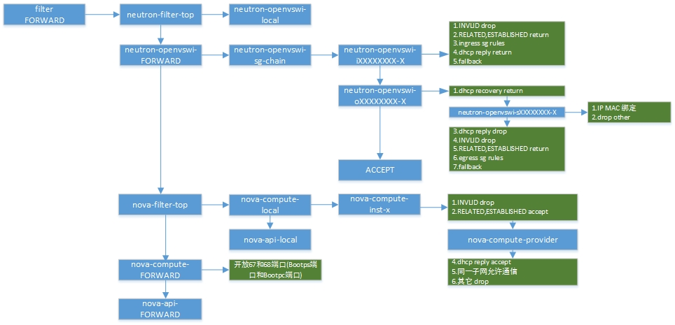
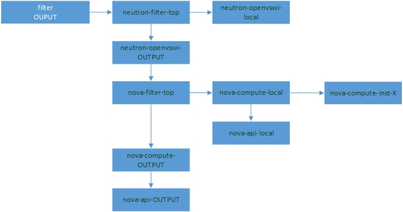
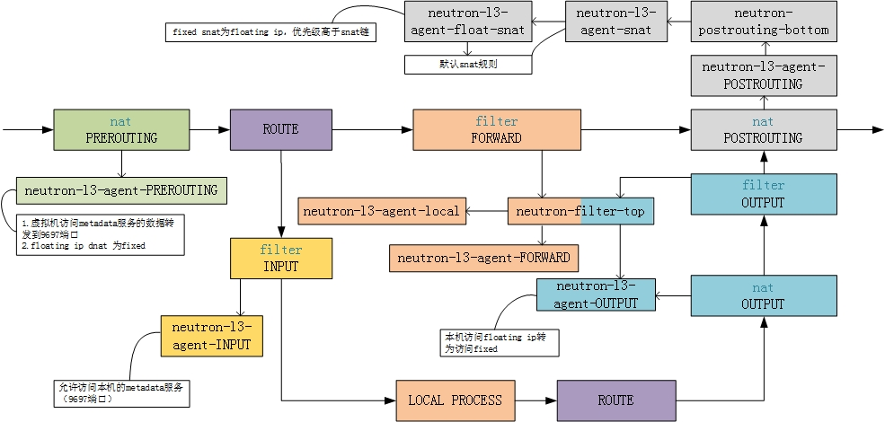

openstack中的iptables
分析all-in-one环境的iptables规则,主要是整理了一下孔令贤的文档。
Table of Contents
2 iptables数据包流向
下面是iptables处理数据包的详细流程图

以本机为目的的包，由上至下，走左边的路
本机产生的包，从local process开始走左边的路
来自外部，目的地址是其它主机的包，由上至下走右边的路
略去raw和mangle表,简化流程如下：

3 初始状态
3.1 iptables
iptables -S -P INPUT ACCEPT -P FORWARD ACCEPT -P OUTPUT ACCEPT #创建自定义链 -N nova-api-FORWARD -N nova-api-INPUT -N nova-api-OUTPUT -N nova-api-local -N nova-filter-top #插入自定义链 -A INPUT -j nova-api-INPUT -A FORWARD -j nova-filter-top -A FORWARD -j nova-api-FORWARD -A OUTPUT -j nova-filter-top -A OUTPUT -j nova-api-OUTPUT #开放nova-metadata的8775端口 -A nova-api-INPUT -d 172.16.0.254/32 -p tcp -m tcp --dport 8775 -j ACCEPT -A nova-filter-top -j nova-api-local iptables -S -t nat -P PREROUTING ACCEPT -P INPUT ACCEPT -P OUTPUT ACCEPT -P POSTROUTING ACCEPT -N nova-api-OUTPUT -N nova-api-POSTROUTING -N nova-api-PREROUTING -N nova-api-float-snat -N nova-api-snat -N nova-postrouting-bottom -A PREROUTING -j nova-api-PREROUTING -A OUTPUT -j nova-api-OUTPUT -A POSTROUTING -j nova-api-POSTROUTING -A POSTROUTING -j nova-postrouting-bottom -A nova-api-snat -j nova-api-float-snat -A nova-postrouting-bottom -j nova-api-snat
3.2 ovs
ovs-vsctl show
021c5197-a0f0-49e2-ad3c-672871f7980a
Bridge br-ex
Port br-ex
Interface br-ex
type: internal
Port "eth0"
Interface "eth0"
Bridge br-tun
Port br-tun
Interface br-tun
type: internal
Port patch-int
Interface patch-int
type: patch
options: {peer=patch-tun}
Bridge br-int
Port br-int
Interface br-int
type: internal
Port patch-tun
Interface patch-tun
type: patch
options: {peer=patch-int}
ovs_version: "1.10.2"
4 创建一台虚拟机
虚拟机加入默认安全组default，添加安全组规则允许192.1.12.152访问安全组，虚拟机绑定浮动IP 192.1.12.171。
5 namespace
ip netns qdhcp-5da2d84b-e0a3-45cc-93da-127866b8ac78 qrouter-ccbd3db4-d4bd-4361-b229-3d5272a96264
6 安全组规则
安全组规则在当前命名空间下
-P INPUT ACCEPT -P FORWARD ACCEPT -P OUTPUT ACCEPT #新增neutron-openvswi-xxx系列链 -N neutron-filter-top -N neutron-openvswi-FORWARD -N neutron-openvswi-INPUT -N neutron-openvswi-OUTPUT -N neutron-openvswi-ifa720634-3 -N neutron-openvswi-local -N neutron-openvswi-ofa720634-3 -N neutron-openvswi-sfa720634-3 -N neutron-openvswi-sg-chain -N neutron-openvswi-sg-fallback -N nova-api-FORWARD -N nova-api-INPUT -N nova-api-OUTPUT -N nova-api-local -N nova-compute-FORWARD -N nova-compute-INPUT -N nova-compute-OUTPUT -N nova-compute-inst-1 -N nova-compute-local -N nova-compute-provider -N nova-compute-sg-fallback -N nova-filter-top -A INPUT -j neutron-openvswi-INPUT -A INPUT -j nova-compute-INPUT -A INPUT -j nova-api-INPUT -A FORWARD -j neutron-filter-top -A FORWARD -j neutron-openvswi-FORWARD -A FORWARD -j nova-filter-top -A FORWARD -j nova-compute-FORWARD -A FORWARD -j nova-api-FORWARD -A OUTPUT -j neutron-filter-top -A OUTPUT -j neutron-openvswi-OUTPUT -A OUTPUT -j nova-filter-top -A OUTPUT -j nova-compute-OUTPUT -A OUTPUT -j nova-api-OUTPUT -A neutron-filter-top -j neutron-openvswi-local #从网桥端口tapfa720634-3a出来和进去的流量到neutron-openvswi-sg-chain,用于安全组规则 -A neutron-openvswi-FORWARD -m physdev --physdev-out tapfa720634-3a --physdev-is-bridged -j neutron-openvswi-sg-chain -A neutron-openvswi-FORWARD -m physdev --physdev-in tapfa720634-3a --physdev-is-bridged -j neutron-openvswi-sg-chain -A neutron-openvswi-INPUT -m physdev --physdev-in tapfa720634-3a --physdev-is-bridged -j neutron-openvswi-ofa720634-3 -A neutron-openvswi-ifa720634-3 -m state --state INVALID -j DROP #已建立连接或在已存在的连接上创建一个新连接的数据包返回跳转 -A neutron-openvswi-ifa720634-3 -m state --state RELATED,ESTABLISHED -j RETURN -A neutron-openvswi-ifa720634-3 -s 192.1.12.152/32 -p icmp -j RETURN #dhcp server对vm1的dhcp应答数据包返回跳转 -A neutron-openvswi-ifa720634-3 -s 10.0.0.11/32 -p udp -m udp --sport 67 --dport 68 -j RETURN -A neutron-openvswi-ifa720634-3 -j neutron-openvswi-sg-fallback #dhcp请求 -A neutron-openvswi-ofa720634-3 -p udp -m udp --sport 68 --dport 67 -j RETURN -A neutron-openvswi-ofa720634-3 -j neutron-openvswi-sfa720634-3 #其它dhcp应答drop -A neutron-openvswi-ofa720634-3 -p udp -m udp --sport 67 --dport 68 -j DROP -A neutron-openvswi-ofa720634-3 -m state --state INVALID -j DROP -A neutron-openvswi-ofa720634-3 -m state --state RELATED,ESTABLISHED -j RETURN -A neutron-openvswi-ofa720634-3 -j RETURN -A neutron-openvswi-ofa720634-3 -j neutron-openvswi-sg-fallback #虚拟机IP MAC绑定 -A neutron-openvswi-sfa720634-3 -s 10.0.0.10/32 -m mac --mac-source FA:16:3E:0F:AA:EA -j RETURN -A neutron-openvswi-sfa720634-3 -j DROP -A neutron-openvswi-sg-chain -m physdev --physdev-out tapfa720634-3a --physdev-is-bridged -j neutron-openvswi-ifa720634-3 -A neutron-openvswi-sg-chain -m physdev --physdev-in tapfa720634-3a --physdev-is-bridged -j neutron-openvswi-ofa720634-3 -A neutron-openvswi-sg-chain -j ACCEPT -A neutron-openvswi-sg-fallback -j DROP #开放metadata的8775端口 -A nova-api-INPUT -d 172.16.0.254/32 -p tcp -m tcp --dport 8775 -j ACCEPT -A nova-compute-FORWARD -s 0.0.0.0/32 -d 255.255.255.255/32 -p udp -m udp --sport 68 --dport 67 -j ACCEPT -A nova-compute-INPUT -s 0.0.0.0/32 -d 255.255.255.255/32 -p udp -m udp --sport 68 --dport 67 -j ACCEPT -A nova-compute-inst-1 -m state --state INVALID -j DROP -A nova-compute-inst-1 -m state --state RELATED,ESTABLISHED -j ACCEPT -A nova-compute-inst-1 -j nova-compute-provider -A nova-compute-inst-1 -s 10.0.0.11/32 -p udp -m udp --sport 67 --dport 68 -j ACCEPT -A nova-compute-inst-1 -s 10.0.0.0/24 -j ACCEPT -A nova-compute-inst-1 -j nova-compute-sg-fallback -A nova-compute-local -d 10.0.0.10/32 -j nova-compute-inst-1 -A nova-compute-sg-fallback -j DROP -A nova-filter-top -j nova-compute-local -A nova-filter-top -j nova-api-local
说明：
- 关于physdev 查看iptables的一般文档，要对物理网卡进行匹配时使用-i和-o选项就可以了。但是这两个参数在建立了bridge的情况下会匹配不上（如果在路由模式下，这两个简单的选项还是可以正常工作的）。因此，若使用bridge并对物理网卡进行匹配，最好是使用physdev模块。参考：皮皮空间 Building bridges with Linux redhat
- 数据包在用户空间的状态
- NEW状态 NEW状态的数据包说明这个数据包是收到的第一个数据包。
- ESTABLISHED状态 只要发送并接到应答,一个数据包的状态就从NEW变为ESTABLEISHED,而且该状态会继续匹配这个连接后继数据包。
- RELATED状态 当一个连接和某个已处于ESTABLISHED状态的连接有关系时,就会被认为是RELATED,也就是说一个链接想要是RELATED状态,首先要有一个ESTABLISHED的连接。
- INVALID状态 不能被识别属于哪个连接状态或没有任何关系的状态,一般这中数据包要被拒绝的。
- NEW:如果你的主机向远程机器发时一个连接请求，这个数据包状态是NEW.
- ESTABLISHED:当联接建立之后，远程主机和你主机通信数据状态为ESTABLISHED
- RELATED: 像ftp这样的服务，用21端口传送命令，而用20端口(port模式)或其他端口(PASV模式)传送数据。在已有21端口上建立好连接后发送命令，用20传送的数据，状态是RELATED
- DHCP使用UDP协议，该数据包的目的UDP端口是67（DHCP服务端使用的UDP端口），源UDP端口是68（客户端使用的UDP端口）。
- + 创建虚拟机vm1，新增port tapfa720634-3a(虚拟机在主机上显示的tap设备)
- 相比初始状态，新增neutron-openvswi-xxx系列的链用于处理具体策略，包含sg表示安全组相关策略。
- 创建虚拟机，port所属安全组对应的iptables规则需更新。
neutron-openvswi-sg-chain链为安全组策略。
neutron-openvswi-sg-fallback,默认丢弃所有包。
每个port对应两条链(ixxx-x和oxxx-x),ixxx-x表示源为外部的安全组策略(ingress)，oxxx-x为目的为外部的安全组策略(egress)。
neutron-openvswi-sxxx-x为虚拟机的IP和MAC绑定。每个port对应一条。
- iptables处理流程
FORWARD链

INPUT链

OUTPUT链

7 l3-agent
Provides L3/NAT forwarding to provide external network access for VMs on tenant networks,构建3层功能模型，主要处理Router和Floatingip资源.
iptables规则在qrouter空间
#filter表 ip netns exec qrouter-ccbd3db4-d4bd-4361-b229-3d5272a96264 iptables -S -P INPUT ACCEPT -P FORWARD ACCEPT -P OUTPUT ACCEPT -N neutron-filter-top -N neutron-l3-agent-FORWARD -N neutron-l3-agent-INPUT -N neutron-l3-agent-OUTPUT -N neutron-l3-agent-local -A INPUT -j neutron-l3-agent-INPUT -A FORWARD -j neutron-filter-top -A FORWARD -j neutron-l3-agent-FORWARD -A OUTPUT -j neutron-filter-top -A OUTPUT -j neutron-l3-agent-OUTPUT -A neutron-filter-top -j neutron-l3-agent-local #metadata -A neutron-l3-agent-INPUT -d 127.0.0.1/32 -p tcp -m tcp --dport 9697 -j ACCEPT #nat表 -P PREROUTING ACCEPT -P INPUT ACCEPT -P OUTPUT ACCEPT -P POSTROUTING ACCEPT -N neutron-l3-agent-OUTPUT -N neutron-l3-agent-POSTROUTING -N neutron-l3-agent-PREROUTING -N neutron-l3-agent-float-snat -N neutron-l3-agent-snat -N neutron-postrouting-bottom -A PREROUTING -j neutron-l3-agent-PREROUTING -A OUTPUT -j neutron-l3-agent-OUTPUT -A POSTROUTING -j neutron-l3-agent-POSTROUTING -A POSTROUTING -j neutron-postrouting-bottom #本机访问floating ip转为访问fixed ip ? -A neutron-l3-agent-OUTPUT -d 192.1.12.171/32 -j DNAT --to-destination 10.0.0.12 -A neutron-l3-agent-POSTROUTING ! -i qg-cc563117-b9 ! -o qg-cc563117-b9 -m conntrack ! --ctstate DNAT -j ACCEPT #虚拟机访问metadata服务器的数据包转到本机9697端口 -A neutron-l3-agent-PREROUTING -d 169.254.169.254/32 -p tcp -m tcp --dport 80 -j REDIRECT --to-ports 9697 #floating ip 转为fixed -A neutron-l3-agent-PREROUTING -d 192.1.12.171/32 -j DNAT --to-destination 10.0.0.12 #fixed -> floating SNAT,优先级高于snat链(默认规则) -A neutron-l3-agent-float-snat -s 10.0.0.12/32 -j SNAT --to-source 192.1.12.171 -A neutron-l3-agent-snat -j neutron-l3-agent-float-snat #默认的SNAT规则 -A neutron-l3-agent-snat -s 10.0.0.0/24 -j SNAT --to-source 192.1.12.170 -A neutron-postrouting-bottom -j neutron-l3-agent-snat
iptables处理流程如下图所示：

8 firewall
firewall功能借用了l3 agent来实现，当前firewall有两种实现：Linux Iptables和 varmour。这里仅关注Linux Iptables。
Neutron的firewall服务在Neutron的Router上利用iptables个规则实现firewall。具 体就是在每个Router的interface设备qr-{xxx}加上入向和出向两个iptables链，每个链 上有具体的iptables规则。
- 默认链，neutron-l3-agent-fwaas-defau,默认DROP。可以理解为firewall的
缺省策略为拒绝访问。
-A neutron-l3-agent-FORWARD -o qr-+ -j neutron-l3-agent-fwaas-defau -A neutron-l3-agent-FORWARD -i qr-+ -j neutron-l3-agent-fwaas-defau -A neutron-l3-agent-fwaas-defau -j DROP
- 入链：neutron-l3-agent-iv4XXXXXXXX(XXX为firewall的ID第一节)
-A neutron-l3-agent-FORWARD -o qr-+ -j neutron-l3-agent-iv4XXXXXXXX -A neutron-l3-agent-iv4XXXXXXXX-XXXX -m state --state INVALID -j DROP -A neutron-l3-agent-iv4XXXXXXXX-XXXX -m state --state ESTABLISHED,RELATED -j ACCEPT #具体规则 -A neutron-l3-agent-iv4XXXXXXXX-XXXX … -j ACCEPT/DROP
- 出链：neutron-l3-agent-ov4XXXXXXXX-XXXX
-A neutron-l3-agent-FORWARD -i qr-+ -j neutron-l3-agent-ov4c3c26e47 -A neutron-l3-agent-ov4XXXXXXXX-XXXX -m state --state INVALID -j DROP -A neutron-l3-agent-ov4XXXXXXXX-XXXX -m state --state ESTABLISHED,RELATED -j ACCEPT #具体规则 -A neutron-l3-agent-ov4XXXXXXXX-XXXX … -j ACCEPT/DROP
目前firewall的实现是在每个租户所拥有的路由的边缘进行iptables配置，关注filter表的 FORWARD链
9 防火墙与安全组
安全组很像防火墙,它们都是使用IPTables规则来做包过滤。他们之间的区别在于：
- 安全组由L2 Agent来实现,L2 Agent（比如neutronopenvswitchagent和
neutronlinuxbridgeagent）会将安全组规则转换成IPTables规则,而且一般发生在所 有计算节点上。防火墙由L3 Agent来实现,它的规则会在租户的Router所在的L3 Agent节点 上转化成IPTables规则。
- 防火墙保护只能作用于跨网段的网络流量,而安全组则可以作用于任何进出虚拟机的流量。
3.防火墙作为高级网络服务,将被用于服务链中,而安全组则不能。
在Neutron中同时部署防火墙和安全组可以达到双重防护。外部恶意访问可以被防火墙过滤掉, 避免了计算节点的安全组去处理恶意访问所造成的资源损失。即使防火墙被突破,安全组作为下一 道防线还可以保护虚拟机。最重要的是,安全组可以过滤掉来自内部的恶意访问。
Neutron的防火墙服务是一个高级网络服务,目标是作为网络服务链中的一个服务节点而存在。 它和安全组构成了双重防护。防火墙的参考实现作用在Neutron的路由器上,所以只对跨子网的 流量起作用。对于来自同网段的恶意攻击,我们还需要安全组来防护。 防火墙Policy的规则是有顺序的,而且每个规则可以被单独禁用和激活。这个特性给防火墙规则 的部署和调试都提供了很强的灵活性。
10 iptables跟踪调试
10.1 说明
在iptables的四个表filter,nat,mangle中,raw中raw拥有最高的优先级，raw表使用 PREROUTING和OUTPUT两个链，因此raw可以覆盖所有包。 在raw表中支持一个特殊的目标:TRACE，可以使内核记录下每条匹配该包的iptables规则信息。 使用raw表内的TRACE target即可实现对iptables规则的跟踪调试。
10.2 配置
假设需要对ipv4的ICMP包进行跟踪调试，抓取所有流经本机的ICMP包
iptables -t raw -A OUTPUT -p icmp -j TRACE iptables -t raw -A PREROUTING -p icmp -j TRACE
加载对应内核模组
modprobe ipt_LOG
调试信息记录在/var/log/kern.log文件。
10.3 调试
在vm内对外部作ping操作，vm的ip为10.0.0.4
[root@10-0-0-4 ~]# ping -c 1 192.168.0.19 PING 192.168.0.19 (192.168.0.19) 56(84) bytes of data. --- 192.168.0.19 ping statistics --- 1 packets transmitted, 0 received, 100% packet loss, time 0ms
在/var/logkeern.log中查看调试信息可以看到数据包经过的各条链和规则。